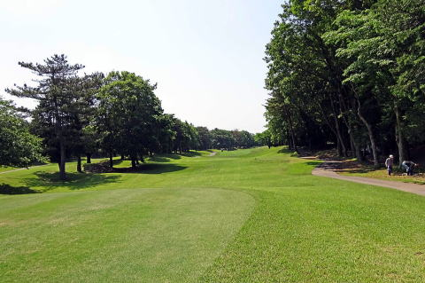
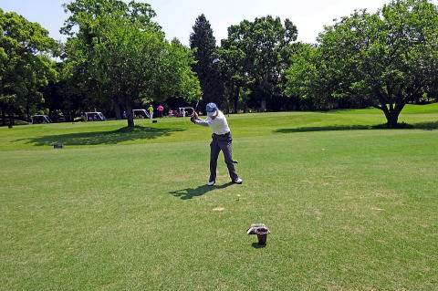
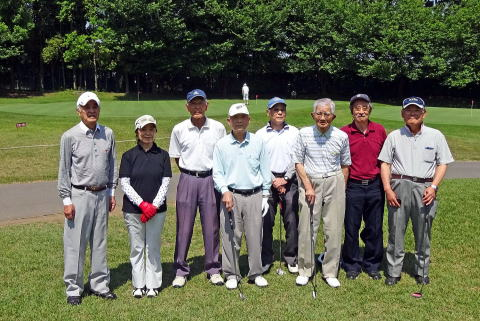
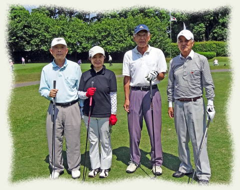
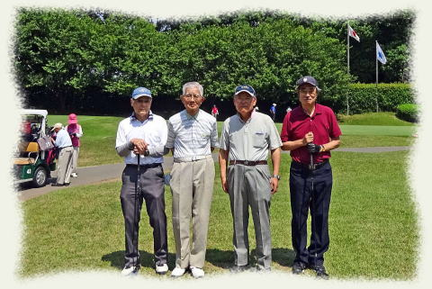
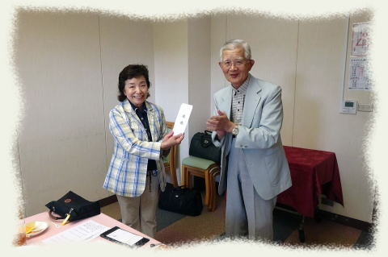
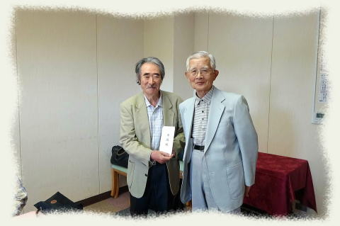
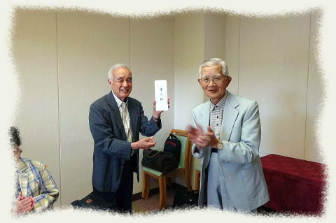
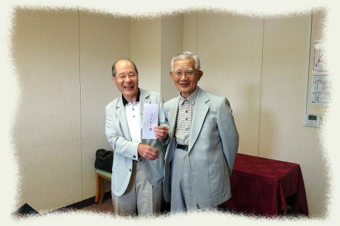

第１８回弘南寮ゴルフ大会
今回も印旛コースで行われました。 ５回連続の印旛コースなので、皆さんコースにも大分慣れてきたようです。 総員 ８名 でした。 初夏で晴天のもと、すがすがしい微風の中でのプレーで、全員満足でした。   スタート OUT の１番  参加者総員 左から ３７年建築 野村安広 稲田ひとみ ３８年造船 久米範佳 ３６年電工 高石周志 ４０年機械 安岡慶和 ３４年機械 山之内克彦 ３９年機械 竹内章二 ３８年電工 稲田浩一   第１組 第２組 プレー後の 懇親会＆表彰式   優勝 準優勝   ３等賞 BB 賞 当日の成績 氏名 IN OUT GROSS HDCP NET 次会HDCP 優勝 稲田ひとみ ４８ ５２ １００ ２２ ７８ １７ 準優勝 竹内章二 ５７ ５５ １１２ ２８ ８４ ２３ 3位 野村安広 ４５ ４６ ９１ ６ ８５ ５ ４位 山之内克彦 ４９ ５１ １００ １５ ８５ ５位 久米範佳 ５１ ４９ １００ １５ ８５ ６位 稲田浩一 ４６ ４８ ９４ ８ ８６ ７位 安岡慶和 ４９ ５５ １０４ １７ ８７ ８位 高石周志 ５０ ５６ １０６ １７ ８９ 次会は１１月７日（火）と決定いたしました。 次会はさらに大勢の参加者を期待しております。 以上 ／幹事 稲田浩一 |